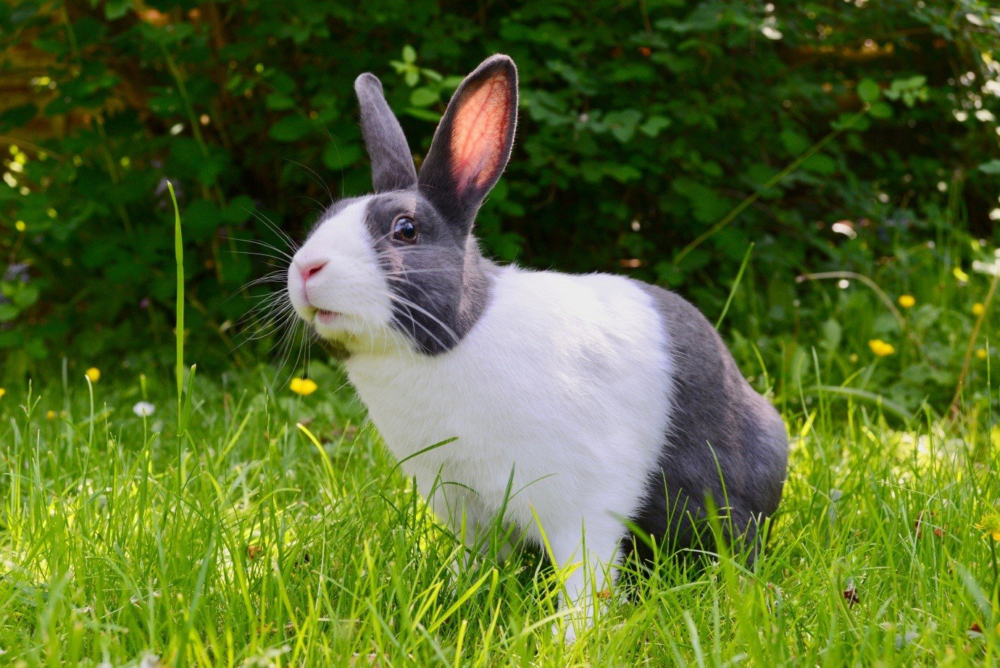
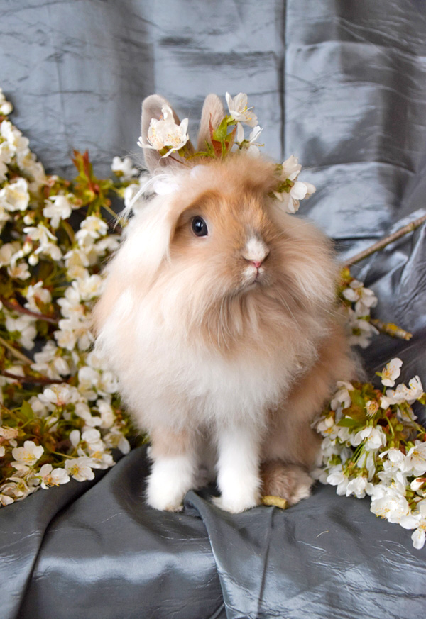
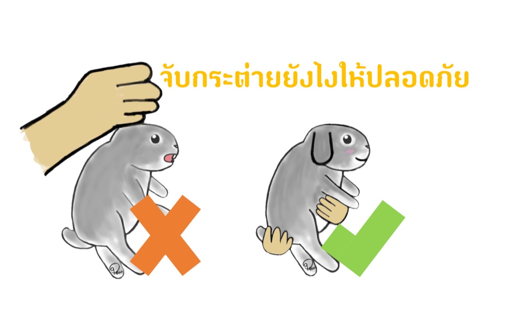
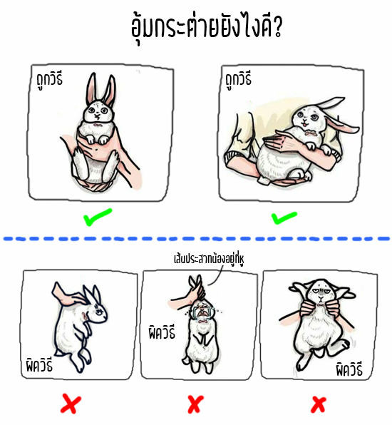

1. การกินมูลตัวเอง (Coprophagy) กระต่ายจะมีการถ่ายมูลพวงองุ่นที่อ่อนนุ่มในยามเช้าตรู่ แล้วกินกลับเข้าไปใหม่เพื่อปรับลำไส้ให้เป็นปกติ โดยในมูลพวงองุ่นก็จะมีทั้งวิตามินบี โปรตีน และแบคทีเรียที่ดี เมื่อกระต่ายกินมูลกลับเข้าไปก็จะได้รับสารอาหารและแบคทีเรียที่ดีกลับเข้าสู่ร่างกายอีกครั้ง
2. การกัดแทะสิ่งของ กระต่ายเป็นสัตว์ฟันแทะและจะแทะเพื่อลับฟัน ไม่ให้ฟันงอกยาวจนเกินไป เพราะหากฟันยาวอาจจะเกิดปัญหาอื่น ๆ ตามมาได้อีกมากมาย ฉะนั้นผู้เลี้ยงจึงควรหากิ่งไม้ ท่อนไม้แห้งเล็ก ๆ แข็ง ๆ หรือไม้แทะแบบสำเร็จรูปทิ้งไว้ให้แทะเล่น แต่ก็ต้องดูว่าไม้นั้น ๆ ต้องไม่เป็นอันตรายต่อกระต่ายด้วย
3. การนอน ที่จริงแล้วกระต่ายเป็นสัตว์หากินกลางคืน จะตื่นตอนกลางคืนเพื่อหากินและจะหลับในเวลากลางวัน กระต่ายบางตัวจะนั่งนิ่ง ๆ สักพักโดยไม่หลับตาและนั่นคือการนอนของพวกมัน เพราะกระต่ายมีสัญชาตญาณในการระวังตัวสูง มักตกอยู่ในสถานะผู้ถูกล่าเสมอ จึงระวังตัวตลอดเวลา
4. การเคาะเท้า กระต่ายอาจจะเคาะหรือกระโดดขึ้น-ลงให้เกิดเสียง เพื่อเป็นการเตือนภัย พวกมันจะเคาะเท้าเมื่อเกิดภาวะเครียดและตื่นกลัว เช่น มีสัตว์อื่นเข้ามาใกล้บริเวณที่อยู่หรือไม่คุ้นเคยเวลามีคนจะเข้าไปอุ้ม
5. ความก้าวร้าว อาการก้าวร้าวอาจเกิดจากการตามใจจนติดเป็นนิสัย การถูกรังแก หรือความต้องการเป็นเจ้าของอาณาเขต จะมากหรือน้อยขึ้นอยู่กับนิสัยของกระต่าย แต่ส่วนใหญ่แล้วจะเกิดจากการตามใจและการถูกรังแกจนฝังใจมากกว่า ซึ่งจะแสดงออกโดยการกัดเวลายื่นมือเข้าไปหรือกัดเวลาได้ของไม่ถูกใจ
- เลี้ยงในบ้าน
ถ้าจะเลี้ยงกระต่ายในบ้าน กรงต้องใหญ่กว่าขนาดตัวของกระต่ายอย่างน้อย 4 เท่า ยิ่งใหญ่เท่าไหร่ยิ่งดี ส่วนพื้นของกรงควรเป็นพื้นไม้เรียบ แบบลวดตาข่ายอาจจะทำให้เท้ากระต่ายมีบาดแผลได้ ห้ามใช้ตู้กระจกเด็ดขาด เพราะมีอากาศไม่เพียงพอ และอย่าลืมวางกระบะถ่ายไว้มุมกรงด้วย
- เลี้ยงนอกบ้าน
กระท่อมหรือกรงสำหรับการเลี้ยงกระต่ายนอกบ้านต้องกันแดดกันฝนได้ ควรสูงอย่างน้อย 1 ฟุตและมีขนาด 30x36x20 นิ้วเป็นอย่างต่ำ ยิ่งมีขนาดใหญ่เท่าไรยิ่งดี เพราะจะได้มีพื้นที่วิ่งเล่นมากขึ้นและไม่ทำให้รู้สึกอึดอัด หลังคาควรจะเป็นแบบเปิดปิดได้ พื้นควรเป็นพื้นไม้มีฟางหรือหญ้าแห้งรองไว้สำหรับนอนด้วย

ไม่ควรจับกระต่ายโดยการหิ้วหู เพราะจะทำให้กระต่ายเจ็บและอาจเป็นสาเหตุทำให้กระต่ายหูตกได้ การจับกระต่ายที่ถูกวิธีมีดังนี้
- ลูกกระต่าย : ใช้มือที่ถนัดจับหนังบริเวณสะโพกให้มั่นคงแล้วยกขึ้นตรง ๆ
- กระต่ายขนาดกลาง : ใช้มือขวาหรือมือที่ถนัดจับหนังเหนือไหล่ให้มั่นคง อาจรวบหูมาด้วยก็ได้ มือซ้ายรองใต้ก้น ให้ด้านหน้าของกระต่ายหันออกนอกตัวผู้จับ
- กระต่ายใหญ่ : ใช้มือขวาจับเหมือนการจับกระต่ายขนาดกลาง แล้วยกอ้อมขึ้นมาทางซ้ายมือ ใช้แขนซ้ายหนีบให้แนบชิดลำตัว โดยใช้มือซ้ายช่วยประคองก้น ให้หน้ากระต่ายหันไปทางหลังของผู้จับ และขากระต่ายชี้ออกนอกตัวผู้จับ
|  |  |
|---|